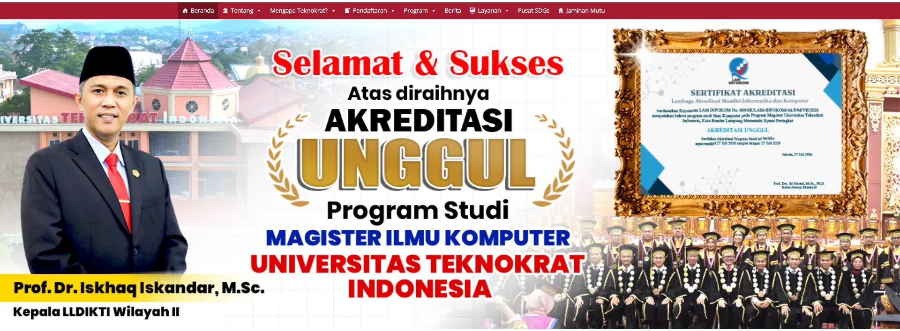
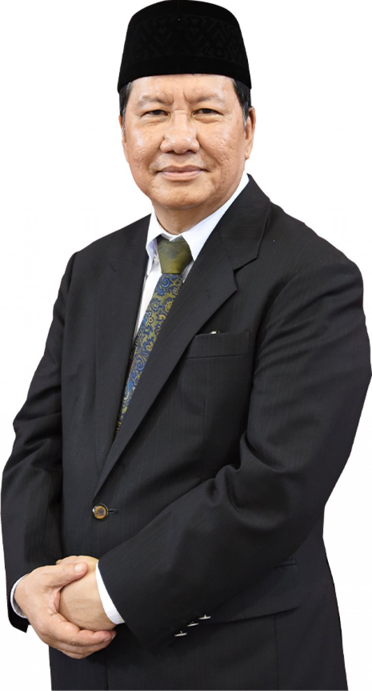
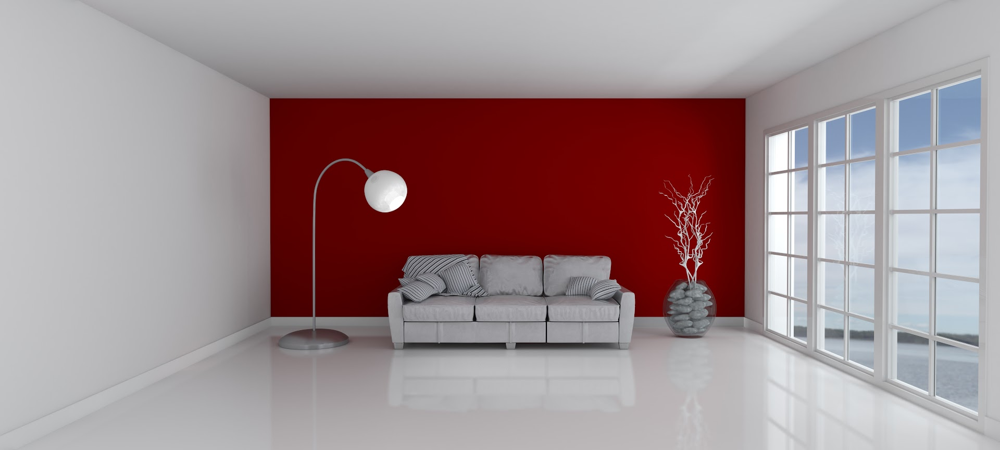

 |
||||||
|---|---|---|---|---|---|---|
| MENU | BERANDA | Tentang | Mengapa Teknokrat? | Pendaftaran | REKTOR | |
MENGAPA MEMILIH UNIVERSITAS KAMI |
Pesan Dari rektor “Pendidikan bukan sekadar tentang memperoleh pengetahuan, melainkan juga tentang membentuk karakter, menginspirasi inovasi, dan memberdayakan generasi mendatang agar dapat memberikan kontribusi yang berarti bagi masyarakat. Di Universitas Teknokrat Indonesia, kami berkomitmen untuk menumbuhkan keunggulan, memupuk kreativitas, dan mempersiapkan mahasiswa kami agar menjadi pemimpin yang cakap, beretika, dan visioner.” — Prof. Dr. H. M. Nasrullah Yusuf, S.E., M.B.A. Di Universitas Teknokrat Indonesia, kami meyakini bahwa pendidikan merupakan landasan kemajuan dan kunci untuk menggali potensi setiap mahasiswa. Selamat datang di universitas tempat keunggulan akademik berpadu dengan inovasi, kreativitas, dan pengembangan karakter. Kami berkomitmen untuk menyediakan lingkungan belajar yang mendorong mahasiswa untuk berpikir kritis, terbuka terhadap ide-ide baru, dan mengembangkan keterampilan yang diperlukan agar dapat sukses di dunia yang terus berubah dengan cepat. Mari bersama-sama kita membangun masa depan yang ditandai oleh pengetahuan, integritas, prestasi, dan kontribusi yang bermakna bagi masyarakat. Rumah merupakan tempat tinggal yang di butuhkan oleh manusia,selain sandang dan pangan, rumah sendiri kebutuhan primer bagi umat manusia selain sebagai tempat tinggal rumah juga dapat digunakan sebagai aset property dimasa depan. property merupakan barang yang di butuhkan oleh manusia,bukan hanya sebgai aset tetapi juga sebagai bukti status sosial seseorang dimata masyarakat. apalagi dimasa sekarang dimana manusia berlomba-lomba untuk menaikan status sosial masing-masing. Status Sosial merupakan kebutuhan akan pengakuan dari seseorang / beberapa orang yang mengakui kita memiliki status sosial mau ini tinggi,biasa-biasa saja atau sekalipun rendah. tetapi mau setinggi apapun setatus sosial kita maka itu tidak akan ada apa-apanya jika kita tidak mau mengenal satu sama lain. Untuk itulah AnaKosan Company hadir untuk menjawab segala keluh kesah dan masalah Anda didunia property percayakan property Anda kepada kami, dijamin property anda akan sesuai dengan apa yang anda impikan dan cita-citakan. Untuk itulah AnaKosan Company hadir untuk menjawab segala keluh kesah dan masalah Anda didunia property percayakan property Anda kepada kami, dijamin property anda akan sesuai dengan apa yang anda impikan dan cita-citakan. Untuk itulah AnaKosan Company hadir untuk menjawab segala keluh kesah dan masalah Anda didunia property percayakan property Anda kepada kami, dijamin property anda akan sesuai dengan apa yang anda impikan dan cita-citakan. Untuk itulah AnaKosan Company hadir untuk menjawab segala keluh kesah dan masalah Anda didunia property percayakan property Anda kepada kami, dijamin property anda akan sesuai dengan apa yang anda impikan dan cita-citakan. Untuk itulah AnaKosan Company hadir untuk menjawab segala keluh kesah dan masalah Anda didunia property percayakan property Anda kepada kami, dijamin property anda akan sesuai dengan apa yang anda impikan dan cita-citakan. Untuk itulah AnaKosan Company hadir untuk menjawab segala keluh kesah dan masalah Anda didunia property percayakan property Anda kepada kami, dijamin property anda akan sesuai dengan apa yang anda impikan dan cita-citakan. |

UMKM Unggul, UMKM naik kelas merupan ukm yang konsisten akan produk yang akan dijual di pasaran
dan untuk meyakini para konsumen pelaku usaha di tuntut untuk memenuhi standard yang telah di tetapkan
seperti memliki surat ijin usaha berupa NIB,IUMK dan SPPL serta memiliki PIRT dan HALAL.

Rumah merupakan tempat tinggal yang di butuhkan oleh manusia,selain sandang dan pangan,
rumah sendiri kebutuhan primer bagi umat manusia selain sebagai tempat tinggal rumah juga
dapat digunakan sebagai aset property dimasa depan.
|
TEKNOKRAT © 2021 | |||